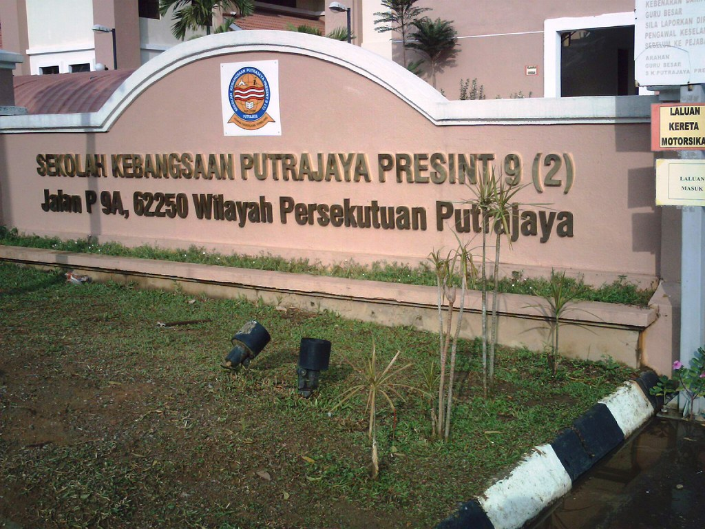
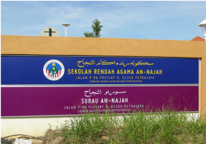
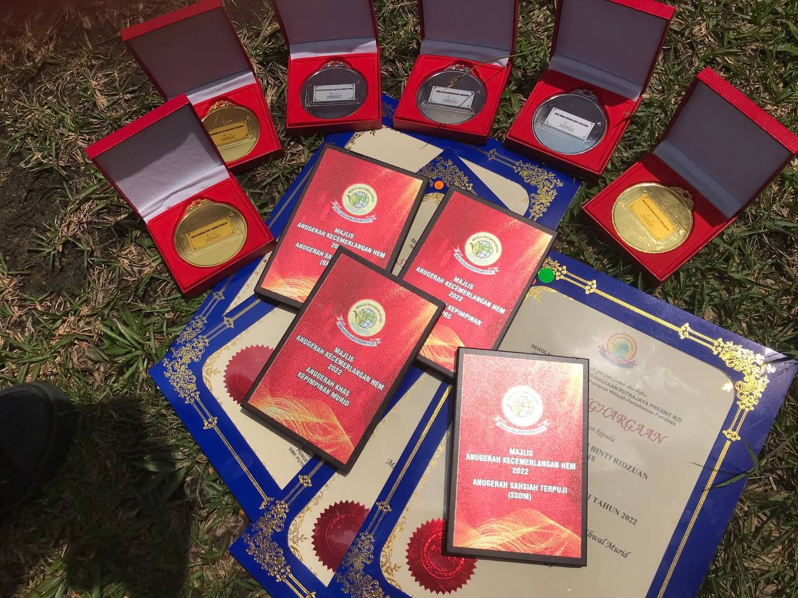

1. Tadika Islam Amaniah
Level:Kindergarten

Amaniah Islamic Kindergarten is located at the Putrajaya District Police Headquarters, Precinct 7.
1. SK Putrajaya Presint 9(2)
Level:Elementary School

Academic Achievements
♦ Grade 3: Ranked 4th in class, received the Best Islamic Education Subject Award.
♦ Grade 5: Ranked 3rd in class, received the Best Islamic Education Subject Award.
♦ Grade 6: Achieved 4A 2B in the Ujian Penilaian Sekolah Rendah (UPSR).
2. Sekolah Rendah Agama An-Najah

Academic Achievements
♦ Grade 1: Ranked Top 10 in the grade.
♦ Grade 3: Ranked 6th in class.
♦ Grade 4: Ranked 2nd in class, received the Best Akhlak and Feqah Subject Award.
♦ Grade 5 (UPKK): Achieved 6A 1B in the Ujian Penilaian Kelas KAFA (UPKK).
♦ Grade 6 (UPSRA): Achieved 8A 1B in the Ujian Penilaian Sekolah Rendah Agama (UPSRA).
3. SMK Putrajaya Presint 9(2)
Level: Secondary School

Academic Achievements
♦ Form 1: Ranked 2nd in class, 5th in form, and received the Best Islamic Education Subject Award.
♦ Form 2: Ranked 4th in class.
♦ Form 4: Ranked 2nd in class, received the Best Mathematics Subject Award.
♦ Form 5 (SPM): Achieved 5A 3B in the Sijil Pelajaran Malaysia (SPM).